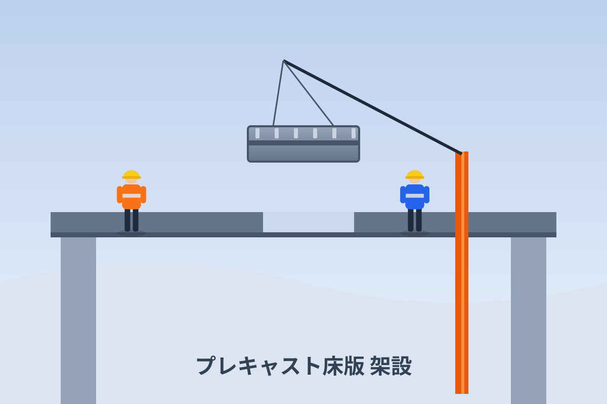

※本サイトはテスト用です。正式なホームページではありません
Construction Projects
高強度スタッドボルトを用いた、鋼橋・鋼製基礎の代表的な補修・補強事例をご紹介します。各事例をクリックすると、工法と施工の概要をご確認いただけます。
疲労き裂が生じた鋼床版下面を、高強度スタッドと当て板で補強する工法です。

既設鋼I桁の上フランジ下面などに当て板を取り付け、補強効率を高める工法です。
狭隘部を含む鋼製基礎に当て板を設置し、耐震性能を高めた施工事例です。